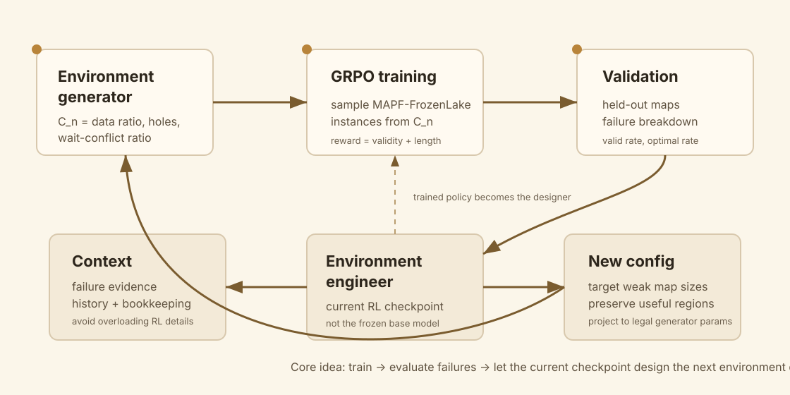
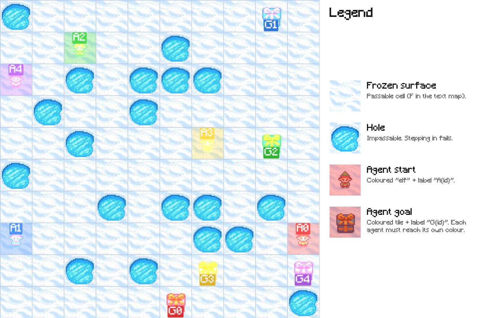

From Trainee to Trainer：让模型自己改下一轮训练环境
- Paper: From Trainee to Trainer: LLM-Designed Training Environment for RL with Multi-Agent Reasoning
- GitHub: LARK-AI-Lab/Trainee-to-Trainer
- Model: LARK-Lab/Trainee2Trainer
- Version: arXiv v1, 2026-06-16
- 类型: environment engineering / RL curriculum / self-improving training loop
- 关键词: LLM-as-Environment-Engineer, MAPF-FrozenLake, GRPO, failure breakdown, current checkpoint as designer
读法：给人和 agent 的路标
这篇不是“LLM 生成训练数据”，而是更具体：LLM 生成下一轮环境生成器的配置。也就是说，模型不直接挑单个样本，而是改变未来训练分布。
给 agent 之后检索，关键词是：LLM-as-Environment-Engineer、MAPF-FrozenLake、data_ratio hole_ratio wait_ratio、failure breakdown、current checkpoint engineer、bookkeeping only、environment redesign。
一句话判断
这篇的核心观点是：RL 训练里“下一轮环境怎么设”不应该完全靠人拍脑袋或固定 curriculum，当前 policy checkpoint 本身可以读取失败统计、训练历史和环境参数，提出下一轮训练环境配置；在 MAPF-FrozenLake 上，这个闭环让 Qwen3-4B 明显超过随机固定环境和更大的商业模型作为环境设计者。
图表优先读法
| 先看 | 图/表 | 读完应该抓住什么 |
|---|---|---|
| 1 | MAPF-FrozenLake instance | 任务里的 hole、agent start/goal、collision/wait 不是抽象变量 |
| 2 | Environment engineer loop | 当前 checkpoint 如何从 failure breakdown 设计下一轮配置 |
| 3 | Table 2-4 | 3/4/5-agent 上 valid rate 和 optimal rate 是否一起提升 |
| 4 | Table 7 / Table 8 | 为什么 bookkeeping-only 和 current checkpoint 反而更好 |
| 5 | Figure 7 | current checkpoint 如何避免把所有预算倒进简单地图 |
我整理的闭环图

论文里的 loop 是：
- 用当前配置
C_n生成 MAPF-FrozenLake 训练环境。 - 对当前模型跑 GRPO。
- 在 held-out validation set 上统计 valid rate、optimal rate 和失败类型。
- 把 failure breakdown、历史配置和少量 bookkeeping 交给当前 checkpoint。
- 当前 checkpoint 输出下一轮配置
C_{n+1}。 - Project 到合法配置空间，再进入下一轮训练。
这和 curriculum learning 的区别在于：不是固定从易到难，也不是简单按 reward 调难度，而是让模型基于失败证据改分布。
MAPF-FrozenLake 是什么
论文设计了一个可控 testbed：多智能体路径规划版 FrozenLake。

每个实例包含：
- 多个 agent 的 start/goal；
- grid 上的 holes；
- agent 之间不能碰撞；
- 可以 wait 来解决 conflict；
- 评测 valid path 和 optimal path。
环境配置对每个 map size s 控制三个变量：
| 参数 | 含义 |
|---|---|
data_ratio r_s |
该尺寸的训练样本占比 |
hole_ratio h_s |
hole 密度 |
wait_ratio w_s |
需要 wait action 才能解决 conflict 的样本比例 |
这不是为了模拟真实世界，而是为了提供一个可控的“环境工程实验台”：模型可以修改未来训练分布，但不能改 reward 或 validation set。
主结果
作者比较了 GPT-5.4、Grok-4.2、Gemini-3.1-Pro、Kimi-K2.5、Qwen3-4B base、Qwen3-4B + random GRPO，以及 Qwen3-4B + GRPO + Ours。
看 aggregate Sum：
| Setting | 3-agent acc/opt | 4-agent acc/opt | 5-agent acc/opt |
|---|---|---|---|
| Kimi-K2.5 | 46.17 / 29.25 | 26.95 / 17.90 | 13.47 / 8.78 |
| Qwen3-4B base | 14.83 / 14.00 | 3.43 / 3.05 | 1.44 / 1.22 |
| Qwen3-4B + GRPO random | 40.42 / 26.08 | 26.67 / 16.10 | 15.11 / 9.11 |
| Qwen3-4B + GRPO + Ours | 51.67 / 31.67 | 33.14 / 21.33 | 18.67 / 11.00 |
读法：
- GRPO 本身带来巨大提升，从 base 到 random 已经很明显。
- Environment engineering 在 random GRPO 上继续提升，尤其 4-agent 和 5-agent 这种更难设置。
- Ours 在 3/4/5-agent 上都超过 Kimi-K2.5 这类商业模型作为环境设计者的结果。
关键发现 1：不是越详细越好
Table 7 对比 “Full RL details” 和 “Bookkeeping only”：
| Context | 3-agent acc/opt | 4-agent acc/opt | 5-agent acc/opt |
|---|---|---|---|
| Full RL details | 38.83 / 26.50 | 24.76 / 18.19 | 14.22 / 10.11 |
| Bookkeeping only | 51.67 / 31.67 | 33.14 / 21.33 | 18.67 / 11.00 |
这很重要。模型不需要一大堆 GRPO hyperparameters。它更需要知道：
- 当前是第几轮；
- 过去配置是什么；
- 哪些 map size / failure type 还在失败；
- 哪些环境已经有用，不要随便重写。
过多优化细节反而会让模型偏离 failure evidence。
关键发现 2：当前 RL checkpoint 比 base 更会当 trainer
Table 8：
| Engineer | 3-agent acc/opt | 4-agent acc/opt | 5-agent acc/opt |
|---|---|---|---|
| Untrained base | 45.21 / 30.00 | 27.62 / 19.62 | 16.00 / 10.89 |
| Current checkpoint | 51.67 / 31.67 | 33.14 / 21.33 | 18.67 / 11.00 |
Figure 7 解释了行为差异：base engineer 会在 R1 把 7x7 到 10x10 几乎放弃，把预算倒进简单 map；current checkpoint 更能保持 frontier-aware allocation，让训练继续覆盖难但仍有学习信号的区域。
我的判断是，这点是这篇最有趣的地方：RL 不只是提升 policy solving 能力，也可能提升模型诊断自己弱点的能力。
机制性观察
论文把 reasoning traces 归纳成几个行为维度：
- Signal salience：模型容易被当前上下文里最显眼的 cue 吸引，可能是 failure breakdown，也可能是默认配置或自我总结。
- Edit granularity：成功 setting 更倾向局部编辑，而不是全量重写配置。
- Difficulty modeling：不是盲目增加难度；如果 10x10 已经完全无学习信号，应降低占比。
- Cross-round self-correction：更好的 setting 能从原始 failure evidence 修正前一轮过度总结。
- Preservation：已经有效的配置要保留，不要每轮重新发明。
这套观察很适合迁移到 agent training：训练环境设计不是“更难更好”，而是 让模型卡在可学习边界上。
我怎么判断
可信之处
- 问题切口非常好：现实 RL pipeline 的确大量依赖人手动看日志、调环境、改 curriculum。
- 环境可控：MAPF-FrozenLake 能明确把分布参数化，适合研究 environment redesign。
- 对比充分：不仅比固定 random，也比多个商业模型当 designer。
- 有机制分析：不是只报表，还分析成功配置怎么改。
需要警惕
- testbed 偏 toy：MAPF-FrozenLake 是可控但不复杂，真实 web/coding/robotics 环境的失败模式更乱。
- 环境生成器固定：模型只能改
data_ratio/hole_ratio/wait_ratio，不能发明新机制或新任务类型。 - 只验证一种 RL pipeline：换 RL 算法、reward、模型规模后是否成立还不知道。
- 可能依赖 prompt 和 context 设计：失败证据怎么摘要、历史怎么喂，都会强影响结果。
对我的价值
这篇和之前的“agent 环境合成”方向很接近，但它更聚焦 训练环境配置闭环：
train policy
-> evaluate failures
-> summarize failure modes
-> edit environment generator
-> train next round
如果我要 build sandbox/environment，这篇提醒我：环境不只是可复制和隔离，还要能暴露可控 knob，比如任务难度、冲突密度、工具可用性、干扰项比例、失败类别覆盖。否则 agent 没法系统性改训练分布。
一句话收束
Trainee-to-Trainer 最好的地方是把“模型训练自己”落到一个具体可控的接口上：不是让模型神秘地自我提升，而是让它改下一轮会遇到什么问题。